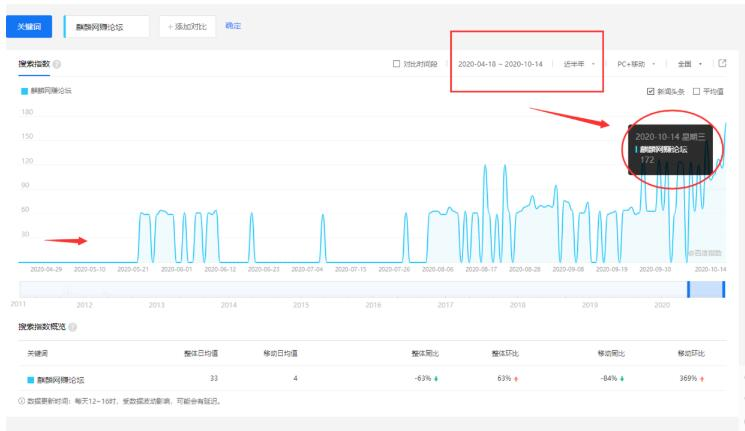

麒麟网赚论坛是村长用站长工具关键词挖掘“网赚论坛”挖出来的关键词，之所以村长关注这个词，是因为，流量不小，而且收录量并不高，仔细查询了一下，居然没有独立网站，这就有点奇怪了，把“麒麟网赚论坛”，“麒麟网赚”这两个词做到百度首页，最少权重2，为什么没有独立站呢？
于是村长就认真的分析了一下“麒麟网赚论坛”，“麒麟网赚”这两个词，截图如下：这是用站长工具（https://data.chinaz.com/keyword/allindex/麒麟网赚）查的，大家看到没有？百度指数不错，两个词都在100左右，如果你把这两个词做到百度首页，权重最少是2。
麒麟网赚百度指数
那么，麒麟网赚论坛为什么没有独立网站？
于是村长又去百度指数（http://index.baidu.com/）里面查询了一下，查询了2020年半年（2020.4.18-2020.10.14），“麒麟网赚论坛”关键词的，指数数据的变化，最高的百度指数是172，最低指数是0，尤其是4月，5月，6月，7月，变动的厉害，截图如下：

麒麟网赚论坛百度指数
所以，村长有点怀疑“麒麟网赚论坛”关键词的百度指数是不刷的？！
如果是刷的，那么做独立站就没有什么意义了，顶多数据好看而已，在此提醒那广告投资商，你打算在一个平台投放广告位，千万要小心，不要看权重高你就盲目投放，有些权重可能是刷的，这样你投放是没有意义的，就算有流量也是垃圾流量，白花钱。
当然，随着时间的推移，刷的指数，也会有部分流量，等大家记住这个品牌以后，那么自然也成为有价值的词了，但是需要时间，很长很长的时间。
之所以现在麒麟网赚论坛没有独立网站，是因为商业价值不高，还没有达到人们去创建独立站，因为创建独立站也是需要成本和精力的，如果投入和回报不成正比就没有人去做独立站了。